Peresmian DPC Banyuwangi
Kamis, 19 November 2026
Blambangan Ballroom, Aston Hotel Banyuwangi
DPC pertama CK17 di Kabupaten Banyuwangi diresmikan oleh Ketua Great Crystal Indonesia CK17 Pusat Surabaya, Bapak David Suwondo, disaksikan PORMI Kabupaten Banyuwangi.
Video Peresmian
Rekaman slideshow foto dan video peresmian ada di halaman Video. Video dokumentasi lengkap (10 menit 40 detik) segera hadir di kanal @greatcrystal.
1Persiapan Venue
Pagi hari sebelum acara dimulai, panitia menyiapkan ballroom: panggung, kursi peserta, dan perlengkapan acara.
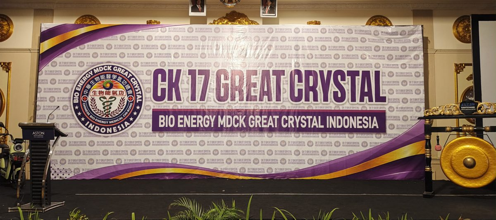
2Registrasi & Foto Bersama Awal
Peserta mulai datang dan mendaftar. Sebagian peserta berfoto bersama sebelum acara dimulai.
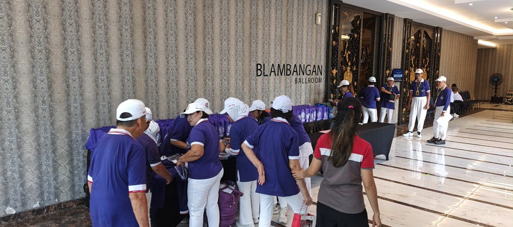
3Kedatangan & Persiapan Acara
Rombongan tamu dan peserta terus berdatangan. Suasana ballroom mulai ramai menjelang pembukaan.
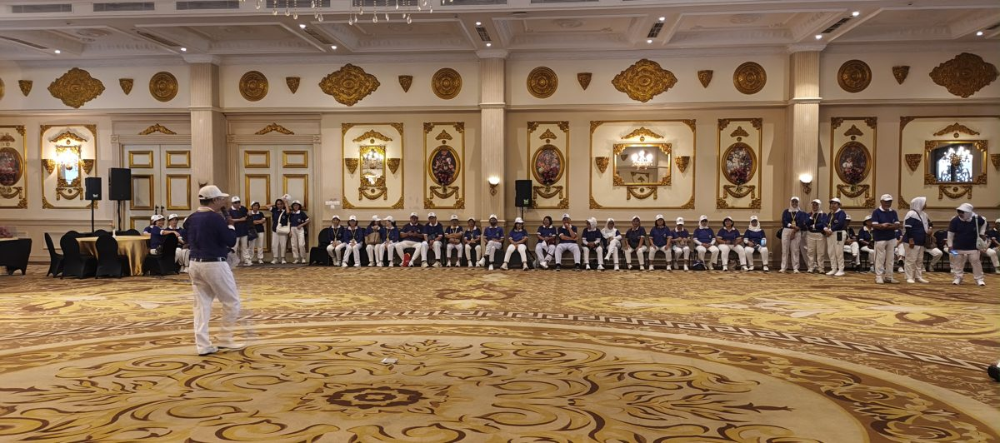
4Sarapan Bersama
Sebelum acara inti, peserta sarapan bersama.
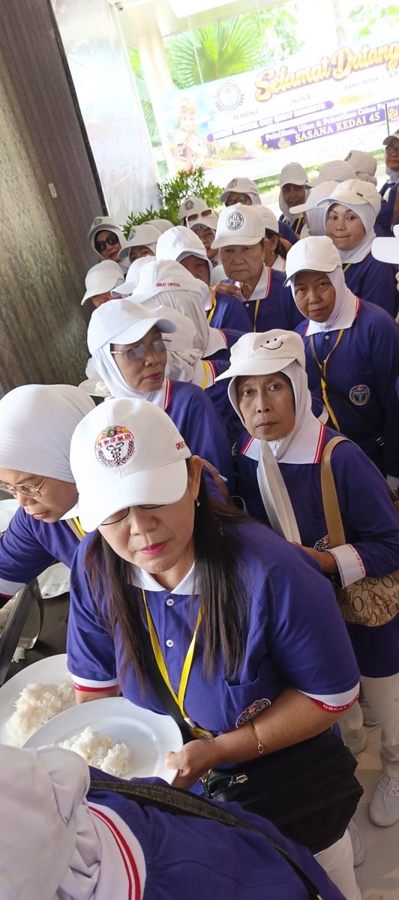
5Foto Bersama Kelompok
Peserta berfoto bersama per kelompok sasana.
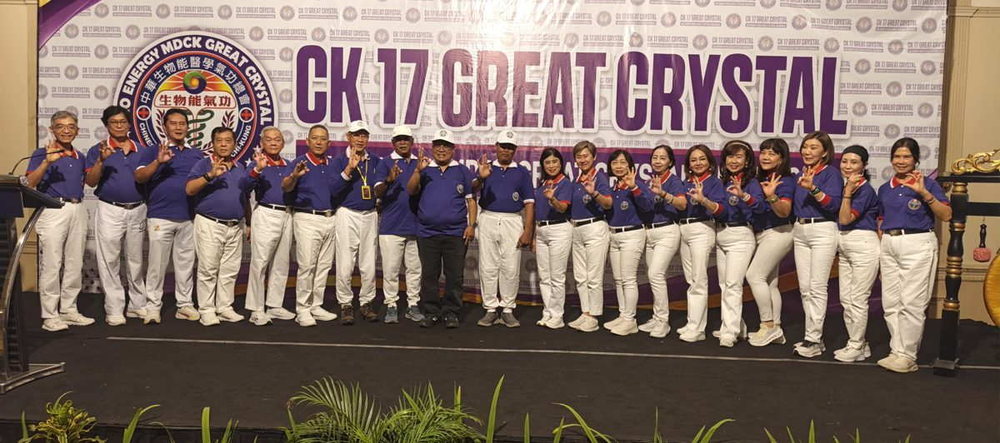
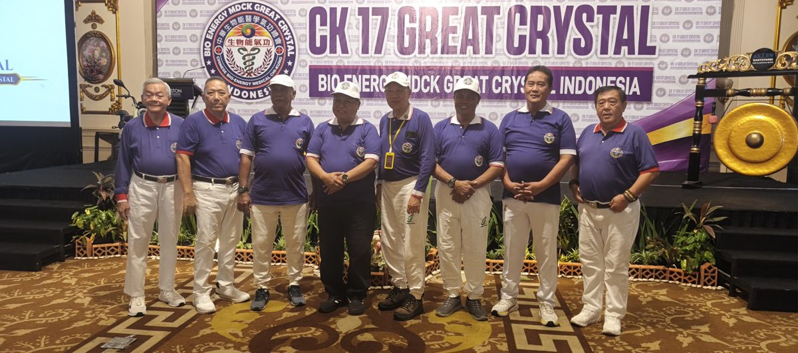
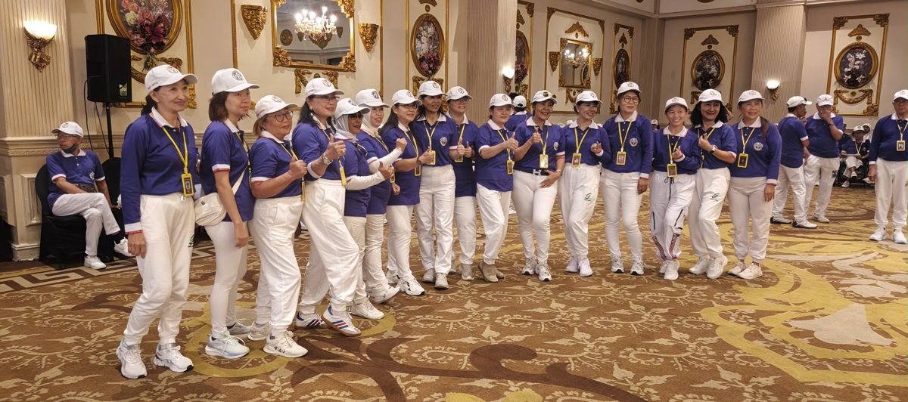
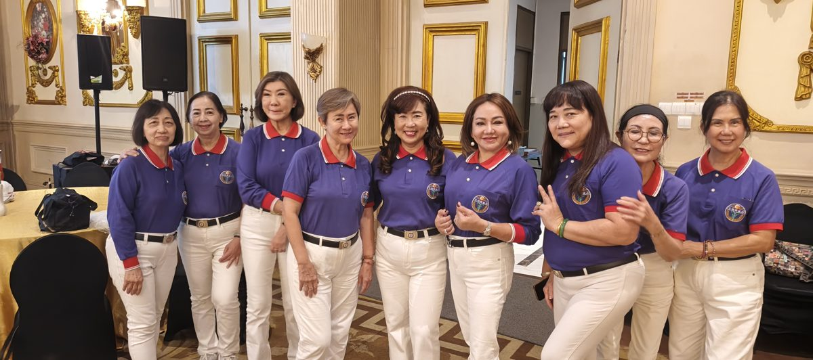
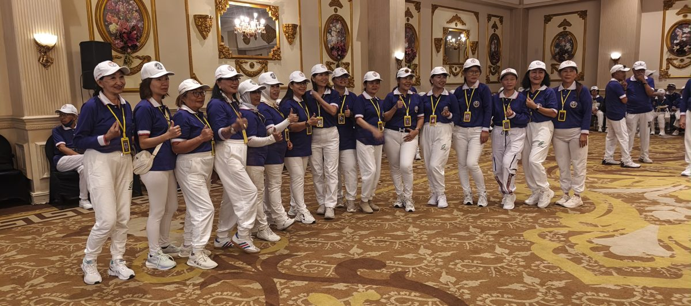
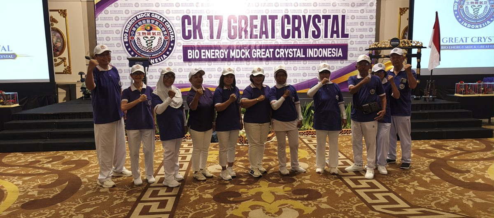
6Pembukaan & Sambutan
Acara dibuka di panggung. MC memandu jalannya acara, lalu sambutan disampaikan di podium.
Peresmian ini menjadi bukti bahwa DPC Banyuwangi mempunyai izin resmi dan legalitas yang pasti sebagai CK17 pertama di kabupaten ini.
Sambutan Bapak Alief Rachman Kartiono
Mewakili Bupati Ipuk Fiestiandani yang berhalangan karena agenda Bunga Desa. Ringkasan sambutan:
- Apresiasi atas perkembangan Great Crystal di Banyuwangi; para Junior Instruktur yang baru dilantik diharapkan menjadi teladan dalam membudayakan pola hidup sehat dengan sikap rendah hati.
- Senam Bio Energy Medical Qigong menjadi salah satu pilihan aktivitas masyarakat untuk menjaga kebugaran tubuh sekaligus membantu menenangkan pikiran dan hati, sejalan dengan program Gerakan Masyarakat Hidup Sehat (GERMAS) Pemkab Banyuwangi.
- Semangat “one team, one passion, one family” sebagai fondasi membangun organisasi yang solid; kesamaan visi dan misi menjadi modal utama agar Great Crystal semakin berkembang dan bermanfaat bagi masyarakat.
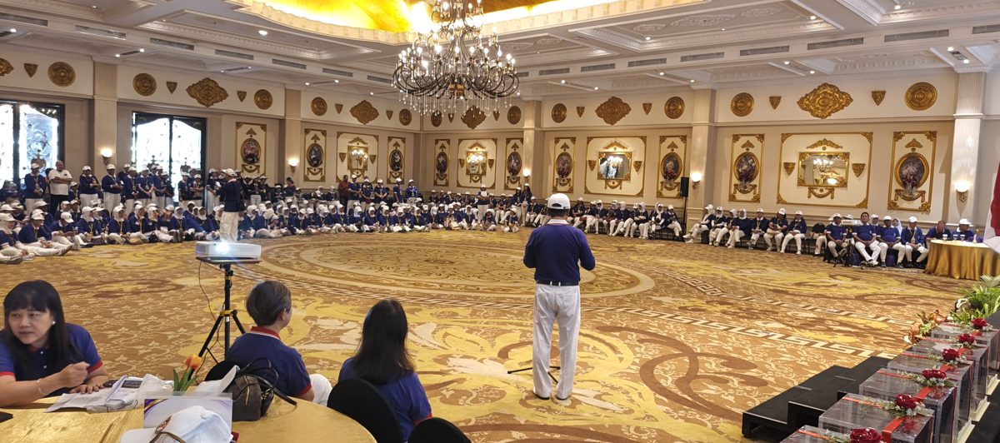
7Peresmian (Gong) & Penyerahan Sertifikat
Puncak acara: pemukulan gong sebagai tanda DPC Banyuwangi resmi diresmikan, disusul penyerahan sertifikat.
Peresmian dilakukan oleh Ketua Great Crystal Indonesia CK17 Pusat Surabaya, Bapak David Suwondo, disaksikan PORMI Kabupaten Banyuwangi.
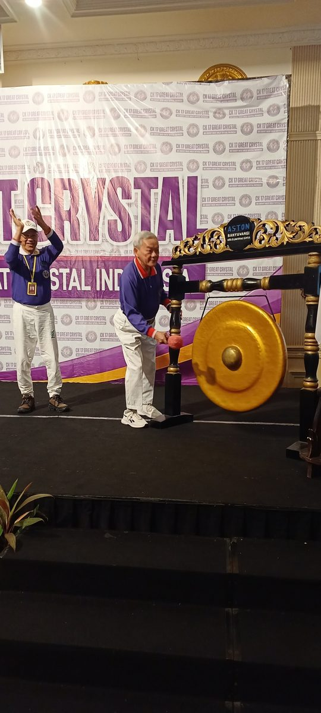
8Penyerahan Sertifikat & Cinderamata
Penyerahan sertifikat dilanjutkan dengan penyerahan cinderamata. Pada kesempatan ini 30 instruktur junior yang baru dilantik menerima sertifikat, setelah dilatih dan diawasi selama 3 hari oleh Dewan Pembina Pusat Surabaya, Bapak Harijanto.
Acara juga dihadiri DPC Probolinggo, YSBMA Situbondo, dan calon anggota baru dari Jember. Kegiatan lain: testimoni dan berbagi pengalaman anggota, senam dan joget bersama, serta doorprize. Setiap anggota yang hadir mendapat 1 tumbler Great Crystal, dan hadiah utama 1 buah sepeda motor listrik diserahkan menjelang akhir acara.
Pesan Bapak Agus Sudirman, Ketua DPC Banyuwangi
Disampaikan di akhir acara: seluruh instruktur junior diminta setia pada satu komando Great Crystal CK17 pusat Surabaya, tidak gampang goyah kena hasutan pihak-pihak yang ingin menghancurkan Great Crystal, dan siap mengembangkan senam CK17 ini hingga ke seluruh pelosok desa dan kecamatan di Kabupaten Banyuwangi, dengan tujuan akhir Indonesia sehat.
Pesan tersebut dapat dirumuskan sebagai tiga prinsip untuk seluruh Junior Instruktur:
- Setia terhadap komando Ketua Umum dan pengurus pusat di Surabaya.
- Menjaga kerukunan serta menghindari sikap saling iri antarsesama instruktur.
- Mengabdi dengan tulus untuk membantu meningkatkan kesehatan masyarakat Banyuwangi.
Pesan Bapak David Suwondo, Ketua Umum CK 17 GREAT CRYSTAL
Pin dan ijazah yang diterima para instruktur bukan untuk berbangga diri, melainkan amanah dan tanggung jawab untuk mengamalkan ilmu dan membantu masyarakat; instruktur diharapkan mengajak lebih banyak warga ikut latihan.
Pesan Bapak Harijanto, Pembina CK 17 GREAT CRYSTAL dari Surabaya
Perbedaan pandangan itu wajar dalam perjalanan organisasi, tetapi tidak boleh menggeser tujuan utama; perjalanan CK17 sebelumnya pernah diwarnai perbedaan hingga melahirkan dua kelompok — pengalaman itu menjadi pelajaran agar pengurus dan anggota di Banyuwangi tidak terjebak konflik internal, menjaga nama baik organisasi, memperkuat soliditas, dan fokus mengembangkan senam.
Ajakan Lao shi IKE Dianita, Instruktur Senior di Banyuwangi
Para instruktur yang baru dilantik dan semua anggota diajak membagikan manfaat CK17 dengan menolong sesama yang sakit tanpa pamrih.
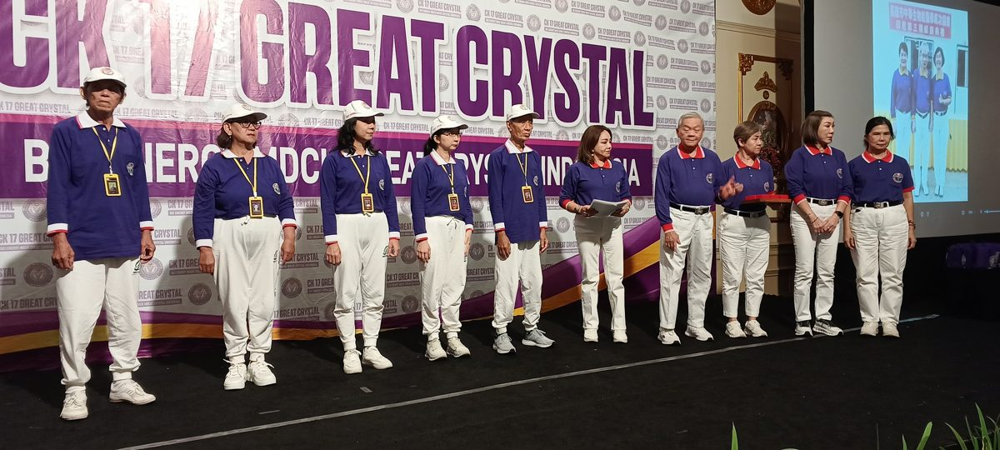
9Foto Bersama Besar & Penutup
Acara ditutup dengan foto bersama besar seluruh peserta, lalu salam penutup dari panggung.
Terima kasih atas kehadiran dan dukungan seluruh anggota.
Selamat atas peresmian Great Crystal CK17 DPC Banyuwangi, 19 November 2026.